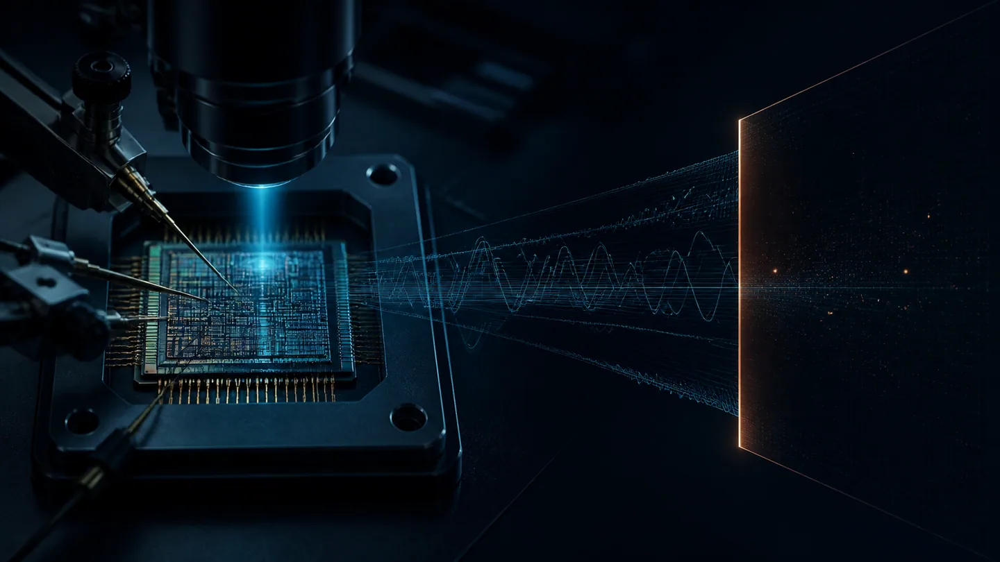
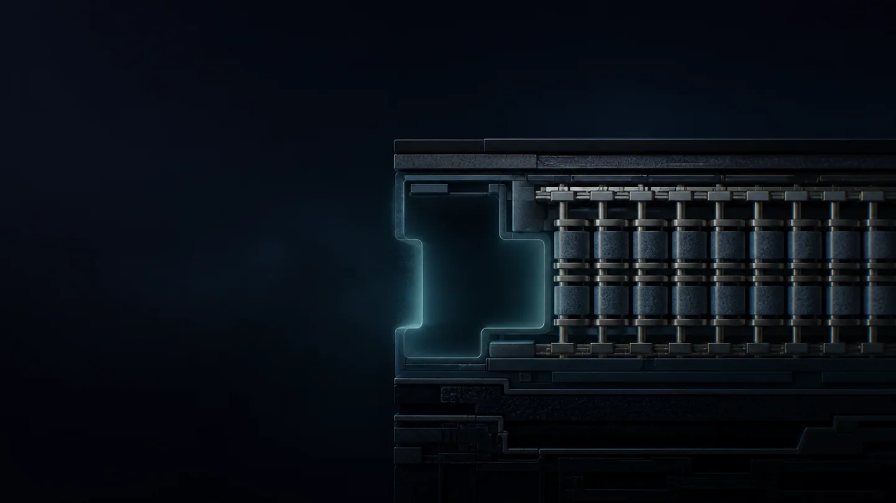

故障改變執行流或權限Fault changes execution or permissions
Boot path、guard read、wrapper 與 lock state 可能在 fault 下失去原先假設。Boot paths, guard reads, wrappers and lock states can lose their assumptions under fault.
TSMC OIP 2026 展會專題版 · SECURE STORAGE ARCHITECTURETSMC OIP 2026 EVENT EDITION · SECURE STORAGE ARCHITECTURE
以 RP2350 公開案例界定實體接觸威脅模型，再由 SRAM PUF 根金鑰、AES-256 加密 OTP、位址混淆與安全控制器組成可防守的系統回應；所有尚待目標晶片證據釐清的限制同時保持可見。Use the public RP2350 case to define a physical-access threat model, then compose a defensible system response from an SRAM-PUF root, AES-256 encrypted OTP, address scrambling and a Secure Controller—while keeping every target-silicon evidence gap visible.
摘要 · 實證收斂核心ABSTRACT · REFINED FOR EVIDENCE
RP2350 的公開結果顯示，permission、wrapper、fault detector 與 antifuse bit-cell opacity 都不能單獨成為最終防線。當 OTP bits 直接代表可用 root key、firmware secret 或 security configuration，成功 readout 的後果會非常接近完整 compromise。The public RP2350 results show that permissions, wrappers, fault detectors and assumed antifuse opacity cannot stand alone as the final barrier. When OTP bits directly encode a usable root key, firmware secret or security configuration, successful readout can approach full compromise.
Secure Storage 將 device-unique root 在上電時由 SRAM PUF 重建，以 AES-256 保護 OTP data，並用 address scrambling 與 Secure Controller 管理 mapping、provisioning、access 與 lifecycle。它的設計目標不是讓 OTP 永遠無法觀察，而是讓觀察結果停在 scrambled ciphertext。Secure Storage reconstructs a device-unique root from SRAM PUF behavior at power-up, protects OTP data with AES-256, and uses address scrambling plus a Secure Controller to govern mapping, provisioning, access and lifecycle. Its design goal is not to make OTP forever unobservable, but to make observation stop at scrambled ciphertext.
01 · 公開攻擊實證01 · PUBLIC ATTACK EVIDENCE
公開結果包含 voltage、laser、EM fault 與 FIB／PVC invasive analysis；這是控制與物理兩條平行 attack paths，不是所有 OTP 都會重現的單一因果鏈。它們支持同一條設計規則：memory-cell secrecy 不應是最後一道 confidentiality boundary。Public results include voltage, laser and EM faults plus FIB/PVC invasive analysis. These are parallel control and physical attack paths—not one causal chain that every OTP will reproduce. They support one design rule: memory-cell secrecy should not be the final confidentiality boundary.

Boot path、guard read、wrapper 與 lock state 可能在 fault 下失去原先假設。Boot paths, guard reads, wrappers and lock states can lose their assumptions under fault.
公開結果讀出相鄰 bit pair 的 OR；完整逐 bit recovery 被認為原理上可能，但未被示範。The public result recovered the OR of adjacent bit pairs. Complete per-bit recovery was considered possible in principle, but was not demonstrated.
只有在 encryption、scrambling、reconstruction、policy 與 lifecycle controls 都成立時，storage-state recovery 才應停在 protected data。Only when encryption, scrambling, reconstruction, policy and lifecycle controls all hold should storage-state recovery stop at protected data.
直接來源：Direct sources: Raspberry Pi challenge results ↗ · IOActive FIB/PVC analysis ↗
02 · 系統架構回應02 · SYSTEM RESPONSE
每一層只解決正確的問題：PUF 降低永久 key residency；AES 提供 confidentiality；scrambling 提高 mapping 成本；controller 約束 transaction 與 lifecycle。Each layer solves the right problem: PUF reduces permanent key residency; AES provides confidentiality; scrambling raises mapping cost; the controller constrains transactions and lifecycle.

上電重建 device-unique root；runtime path、helper data 與 zeroization 仍須驗證。Reconstruct a device-unique root at power-up; runtime path, helper data and zeroization still require assurance.
真正的 confidentiality boundary；需要 FI／SCA 與 key-derivation evidence。The real confidentiality boundary; FI, SCA and key-derivation evidence remain required.
增加 recovery 與 reconstruction 成本，但不取代 encryption。Raises recovery and reconstruction cost, but never replaces encryption.
管理 provisioning、APB access、error response、lifecycle 與 software contract。Governs provisioning, APB access, error response, lifecycle and the software contract.
架構閱讀示例：不產生金鑰、不執行加密或寫入，也不代表已完成驗證。Architecture reading example: no key generation, encryption or writes, and no claim of completed validation.
在四個階段保留；完整性、版本與權限仍需查核。Retained across all four phases; check integrity, version and privileges.
斷電：不刻意維持重建金鑰；電源域與殘留狀態需驗證。Power-off: no intentionally retained reconstructed key; validate domains and remanence.
重建：暫時處理機密，先查核 helper 完整性與版本。Reconstruct: transient secrets; first check helper integrity and version.
存取：交易期間可能存在金鑰與明文；限制權限與存活時間。Access: keys and plaintext may exist during transactions; bound privileges and lifetime.
零化：清除暫存是目標，完成時序與中斷路徑需驗證。Zeroize: clearing volatile state is the goal; validate timing and interruption paths.
Absent-at-rest 只處理永久 root target；runtime residency、reset interruption 與 zeroization 必須另行驗證。Absent-at-rest removes a persistent root target; runtime residency, reset interruption and zeroization still require separate evidence.
公開 helper data 仍需要 leakage、integrity、replay、rollback 與 fault evidence。Public helper data still requires leakage, integrity, replay, rollback and fault evidence.
Contractual ownership、qualification support 與 product-response scope 仍須在 target configuration 確認。Contractual ownership, qualification support and product-response scope must still be confirmed for the target configuration.
架構來源：Architecture source: Synopsys Secure Storage Solution ↗
03 · 實證檢驗門檻03 · EVIDENCE GATES
OIP 報告應把結果分為 public evidence、vendor disclosure、system inference 與 validation gap；不要把設計意圖寫成完成驗證。The OIP report should separate public evidence, vendor disclosure, system inference and validation gaps; design intent must not masquerade as completed validation.
教學模型 2026-10-08：BER 基準 3.8%、溫度係數 0.45、老化係數 0.012、每單元最小熵 0.82 bit 皆為既有假設，非產品規格或量測。BCH 以 n=128、k≈128−7t 及獨立誤碼近似；t≥19 超出此簡化模型，保留輸入並顯示無法試算。FER 比較門檻 10⁻⁶／10⁻³ 不是 AEC-Q100 或密碼安全認證；機率數值下限 10⁻¹⁵ 為顯示截斷。HKDF 不會增加原有熵，實際碼、誤碼相關性與洩漏須另驗證。Illustrative model 2026-10-08: baseline BER 3.8%, temperature coefficient 0.45, aging coefficient 0.012 and 0.82 bit min-entropy per cell are existing assumptions, not product specifications or measurements. BCH uses n=128, k≈128−7t and independent errors; t≥19 is outside this approximation, so the input remains available with no estimate. FER thresholds 10⁻⁶/10⁻³ are not AEC-Q100 or cryptographic certification; 10⁻¹⁵ is a display floor. HKDF does not increase entropy; validate the actual code, error correlation and leakage.
公開案例支持威脅模型與問題重要性。Public cases support the threat model and urgency.
產品頁支持功能、AES-256、PUF root、APB 與 OTP node availability。Product pages support functions, AES-256, PUF root, APB and OTP node availability.
PVT 邊界單元篩選、高低溫 Aging、LFI/Glitch 故障注入、DPA/CPA 功耗側信道衰減、頂層主動金屬屏蔽、單週期 Zeroization、以及 NIST SP 800-90B/208 與 CC AVA_VAN.5 證據鏈尚需具體封閉。Extreme-PVT marginal cells, thermal aging, LFI/glitch injection, DPA/CPA attenuation, active top-metal shield, single-cycle zeroization, and formal evidence chains (NIST SP 800-90B/208, CC AVA_VAN.5) must still close for the target configuration.
此 architecture 合理地把 OTP physical recovery 與 usable-secret recovery 分離；但特定產品的 resistance、certification 與 residual risk 必須以 target implementation evidence 確認。The architecture credibly separates physical OTP recovery from usable-secret recovery; resistance, certification and residual risk for a specific product require target-implementation evidence.
節點來源：Node source: Synopsys OTP platform evidence ↗
04 · OIP 共同決策04 · OIP DECISION
TSMC OIP 的價值不是只列 N5／N3，而是把 exact macro、node、integration boundary 與 assurance deliverables 對齊。The OIP value is not simply listing N5/N3; it is aligning the exact macro, node, integration boundary and assurance deliverables.
Node · OTP macro · capacity · read mode · qualification · Secure Storage release status
Power/reset · APB privilege · DFT/debug · provisioning · firmware API · lifecycle
FI · SCA · invasive · PVT/aging · zeroization · residual risk · report owner
建議簡報結尾：Recommended close: 同意 target node 與 configuration 的 evidence closure plan，而不是宣稱所有攻擊已被消除。Agree the evidence-closure plan for the target node and configuration—rather than claiming every physical attack has been eliminated.
05 · 3D CHIPLET 異質整合05 · 3D CHIPLET INTEGRATION
基於第一性原理熱機械切應力模型 (CTE 失配剪切)、Cu-Cu 混合鍵合與微凸塊寄生 RC 讀取延遲、以及頂層 300W 高算力晶粒引發之垂直熱阻堆疊效應，評估 TSMC SoIC、CoWoS-S 與 Foveros 架構下 eNVM 物理可行性。 First-principles simulation of interface shear stress from CTE mismatch, Cu-Cu hybrid bonding / micro-bump parasitic RC read latency, and thermal stacking hotspots under 300W compute dies across TSMC SoIC, CoWoS-S, and Foveros architectures.
與安全儲存的關係：重建金鑰與 OTP 存取可能跨晶粒，互連延遲、熱環境與供電／重設會影響生命週期整合。本模型保留封裝情境作為問題探索；選擇 SoIC、CoWoS 或 Foveros 預設不代表具名產品規格、代工廠認可或安全資格。封裝試算不能替代 PUF、控制器與目標晶片的驗證。Relation to secure storage: key reconstruction and OTP access may cross dies, so interconnect latency, temperature and power/reset affect lifecycle integration. Packaging presets remain for exploration; selecting SoIC, CoWoS or Foveros does not establish named-product specifications, foundry approval or security qualification. Packaging estimates do not replace PUF, controller or target-silicon validation.
以架構確立隔離，以證據建立保證。Architecture establishes the separation. Evidence establishes the assurance.